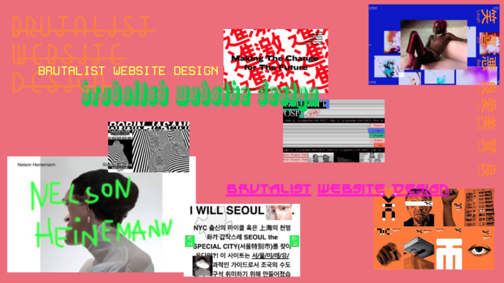
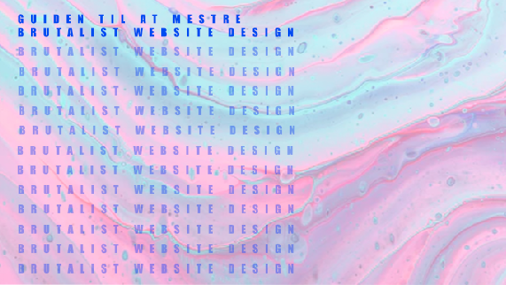

GRUNDLÆGGENDE WEB
Responsivt site v2
På denne side vil jeg præsentere mine projekter fra 1. tema, udfra opgave 02_04_02 Responsivt site v2
Proces for designlayoutet
I processen for dette site, var det vigtigt at lave et godt stykke forarbejde, da opgaven krævede at vi kodede en hjemmeside i en bestemt stil. Min tildelte stil var brutalism, der lægger op til farvekontraster, og brydning med de normale harmonier og layoutudtryk. Brutalism kommer nemlig til udtryk gennem kaos, forvirring og uæstetik.
Gestaltlovsprincipperne kan ses i layoutdiagrammet til websitet, og bruges derfor til at skabe en sammenhæng i designet. Derudover har jeg prøvet at opnå en hvis consistency og overskuelig navigering gennem sitet, uden at det skulle falde for meget uden for stilen, der normalt bliver associeret med en meget kaotisk navigering.
Font pairing gjorde jeg ikke brug af, da min stil ikke går meget op i det æstetisk flotte layout. Jeg kan dog sige at jeg har brugt en computerlignende serif-font til mine overskrifter, og en sans-serif til mine brødtekster og til navigationen, for at bryde de klassiske font-regler lidt i forbindelse med min stil. Derudover er den computerlignende font også med til at give et bestemt og kosekvent udtryk til websitet.
Efter research og definering af min stilart og en efterfølgende designanalyse, har jeg udarbejdet nedenstående moodboard og styletile:
Komposition og kodning
I flere af mine sektioner, har jeg brugt et gridbaseret layout, som mig forventet ifølge den udleverede wireframe. Derudover har jeg i min CSS har jeg gjort brug af forskellige properties på mine elementer. På mit nav-tag har jeg fx. brugt flexbox. Dette gør at mine UI-navigeringsknapper i menuen, lægger sig pænt ved siden af hinanden. Der er også gjort brug af boxmodellen på nogle forskellige sektioner.
Jeg har arbejdet med mobile-first og har derfor tre mediaquiries, der gør sitet responsivt i mange versioner.
Dette site indeholder kun to sider, men man kan navigere rundt i de forskellige sections. Jeg fandt det, i processen, derfor ikke nødvendigt at udarbejde et sitemap. I min kodning har dog jeg fulgt det udleverde layoutdiagram. Dette er et diagram for den semantiske HTML-struktur, der i dette tilfælde indeholder seks sections, fungerende som hver deres afsnit på siden. Layout og grid for hver section er forskellige, og det kan derfor betale sig at opdele koden på denne måde.
Det validerede website er uploadet til mit eget domæne via FileZilla.
Udarbejdelse af splashbillede
På mit splashbillede, kunne jeg afprøve min nye viden indenfor layout og komposition. Da brutalism er karakteriseret som meget kaotisk, var det derfor vigtigt for mit udtryk, at der var lidt ubalance. Farvekontraster og størrelseskontraster, har derfor været i fokus. Dog brugte jeg alligevel et grid samt rule of thirds og the golden section, til at opnå et responsivt layout, med en underlæggende balance og traditionel komposition.
Som det kan ses i min process herunder, har der været mange tanker i spil, og jeg har gennem min arbejdsproces fundet frem til et splashbillede jeg tænkte var perfekt til det udtryk jeg gerne ville give brugeren på mit website.
Mit splashbillede er udført i Adobe XD, hvilket var et program jeg ikke kendte før jeg startede på KEA. XD's værktøjer og muligheder, gør programmet oplagt for et design som dette.
Jeg brugte peer to peer-metoden i dannelsesprocessen for mit splashbillede, hvilket var en meget brugbar og gennemført metode. Undervejs fik jeg nemlig muligheden for at udforske de forskellige overvejelser gennem processen.
Her ses mine HiFi prototyper på mit splashbillede:
